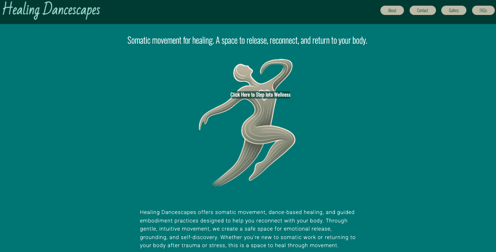
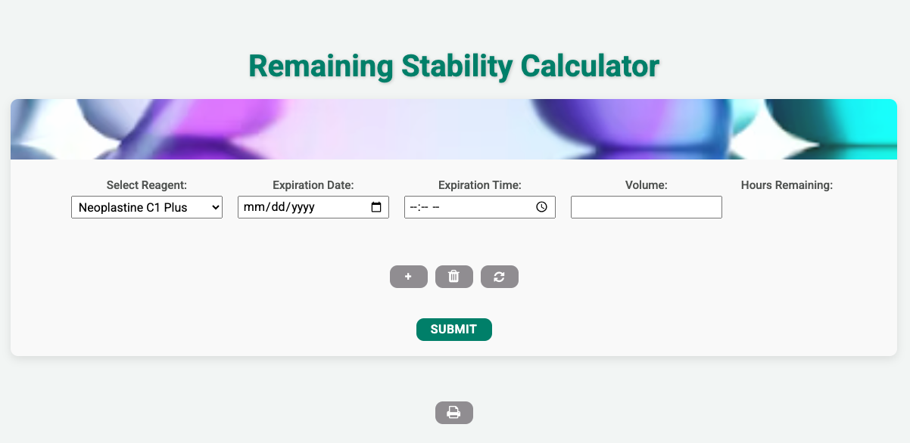

Technical & Operations Professional Exploring Data, Structure, and Systems
Download ResumeI’m a technical and operations-focused professional with experience in healthcare systems, laboratory processing, and accuracy-driven environments. I apply systems thinking and documentation precision to building accessible, practical digital tools that support real workflows. I’m currently expanding my skills in front-end development, accessibility, and data-informed problem solving, with an interest in behind-the-scenes work where strong structure improves clarity and consistency.
A multi-page website for a dance meditation instructor featuring responsive design, consistent UI, and interactive JavaScript components.
 View on GitHub Case Study (PDF)A dynamic tool that calculates remaining stability hours for laboratory reagents. Includes dynamic rows, form logic, and print-optimized reporting.
 View on GitHub Case Study (PDF)Email: me@benjchristiansen.com
GitHub: github.com/BenjChristiansen
LinkedIn: linkedin.com/in/benjchristiansen